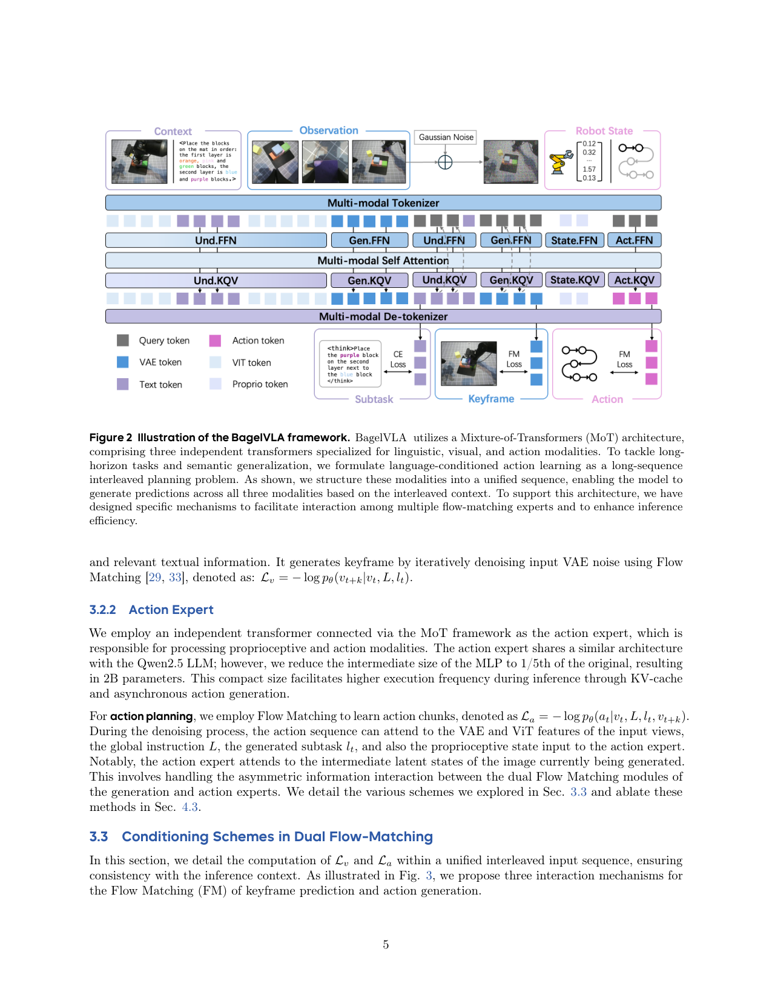
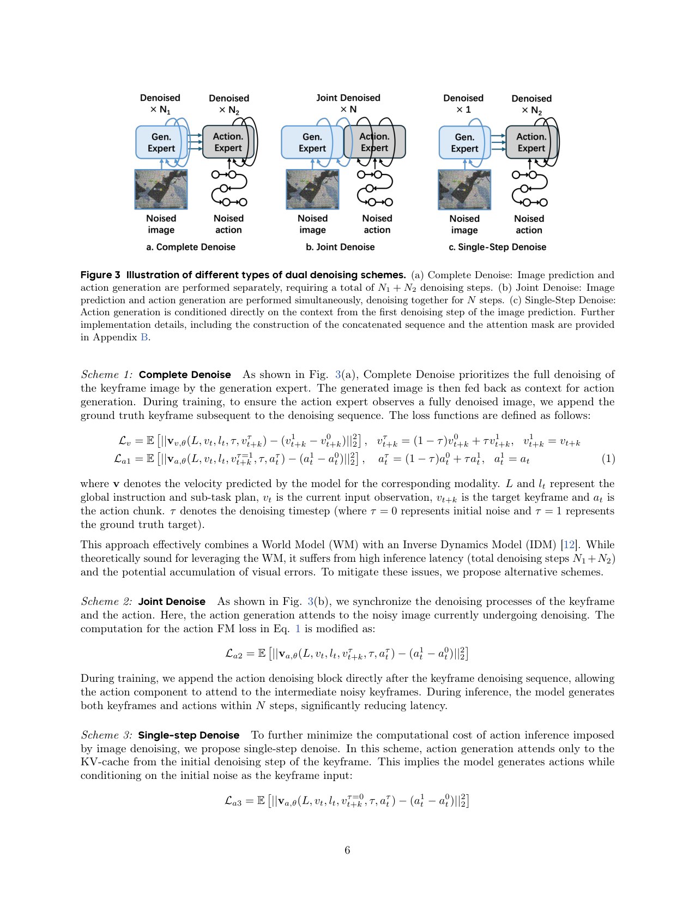
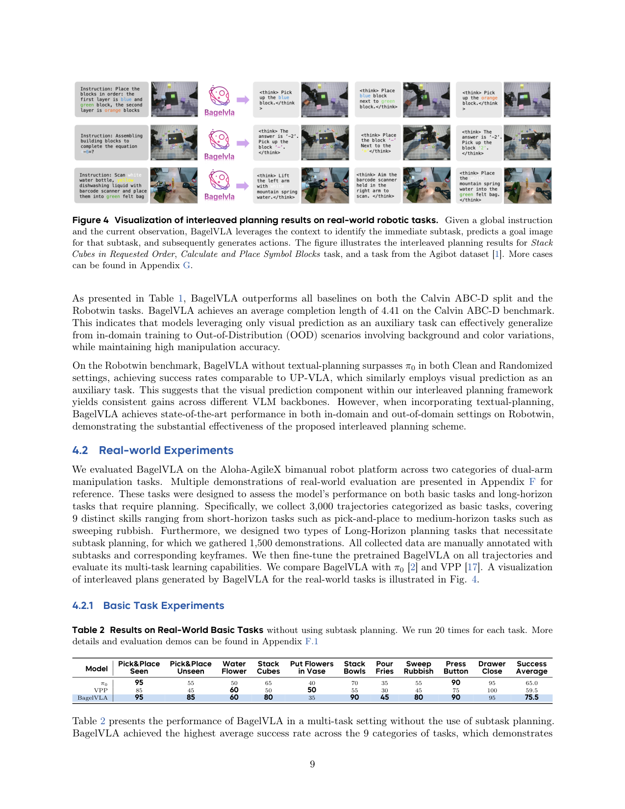
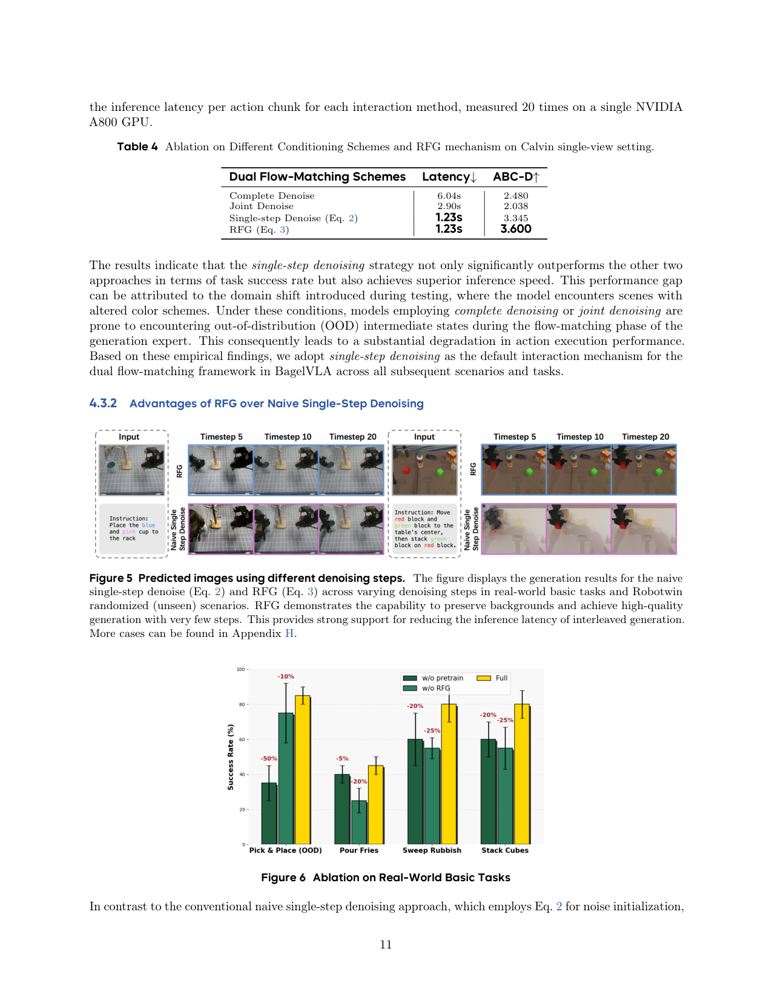
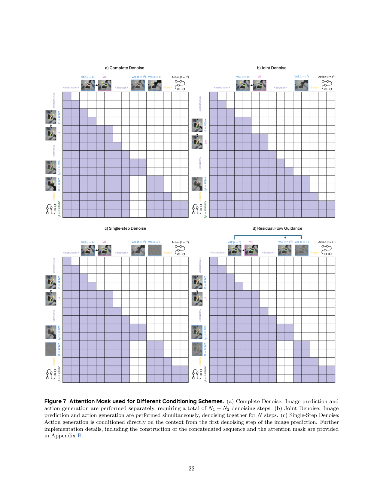
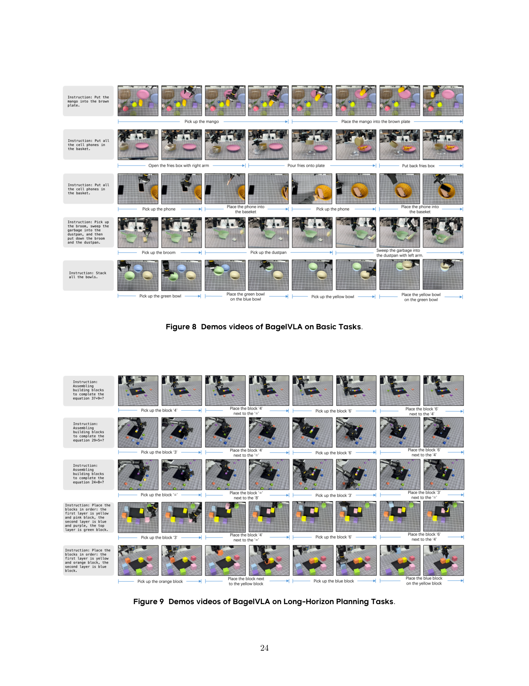
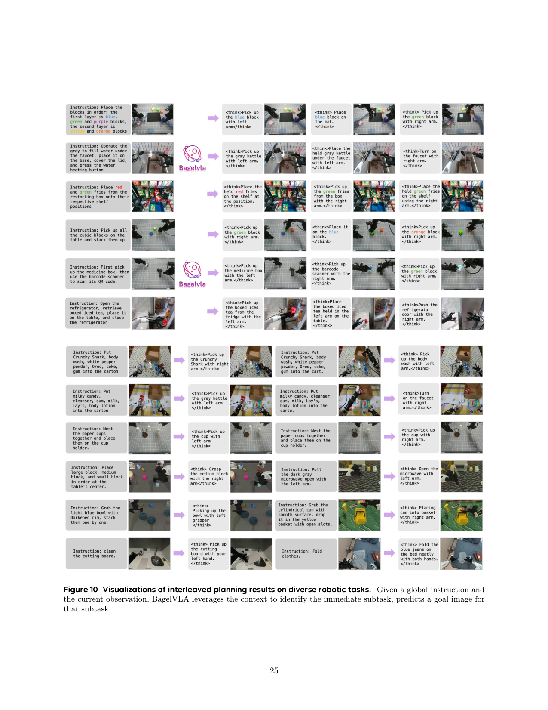
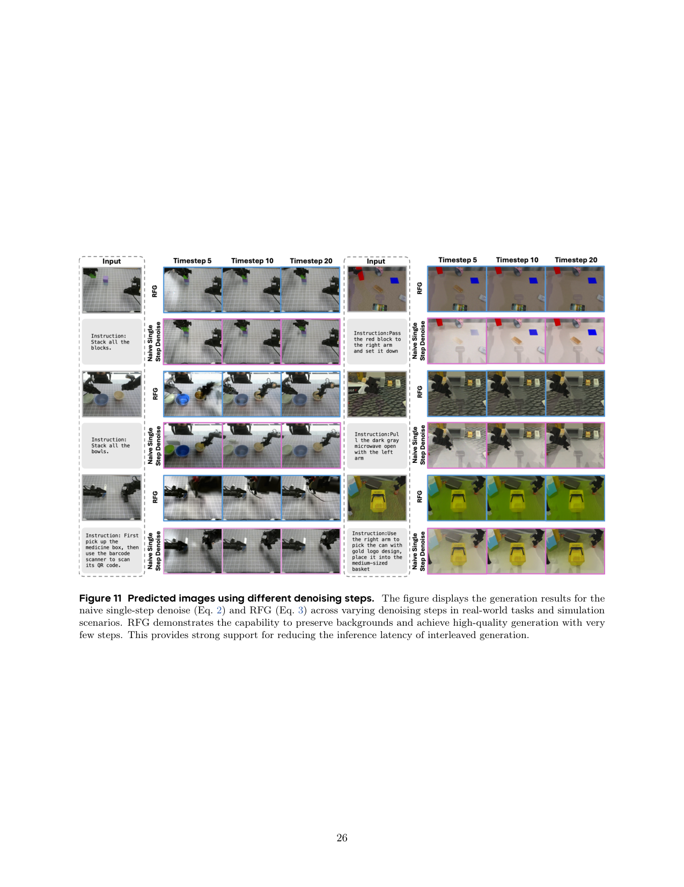

在 Bagel 统一理解+生成 MoT 底座上接一个 2B action expert,把'语言规划→关键帧预测→动作生成'三步显式交错进一条序列,并用 Residual Flow Guidance(以当前帧为初始噪声做单步去噪)把视觉前瞻的延迟从 6 秒压到 1.23 秒。
问题
要解决什么：长程操作任务(如按指定顺序叠积木、算术式摆积木)里,全局指令隐含一串子阶段,现有 VLA 把它当黑盒映射,要么只做语言规划缺视觉前瞻,要么只做视觉预测缺逻辑推理。BagelVLA 要让模型显式交错地'想下一步文字→想象下一个关键帧→出动作'。
为什么 prior work 不够：VPP/Cosmos Policy 这类用视频预测做 policy 的方法缺专门 VLM backbone,指令跟随差;RT-2/OpenVLA 这类纯 VLA 没有视觉前瞻,长程任务靠语义硬撑。统一理解生成模型(Bagel/Chameleon/Show-o)有'边想边画'能力但不是为具身控制设计的,且把视觉生成塞进 action 循环会带来 6 秒级延迟(Complete Denoise),完全没法实时。F1 拼了 VLA+IDM 但没做显式交错规划和视觉生成。
输入 / 输出
输入
| 名称 | 类型 | 说明 |
|---|---|---|
| multi-view observations v_t | image | 多视角当前观测;Calvin 用 2 视角预测第 3 视角,RoboTwin/真机用 3 视角(主视角+左右腕),SigLIP2 编码理解特征 + FLUX VAE 编码生成特征 |
| global instruction L | text | 全局指令,如'按红→黄→蓝→绿顺序叠积木' |
| proprioception | vector | 本体感受,Calvin 不用,RoboTwin/真机用;进 action expert |
输出
| 名称 | 类型 | 说明 |
|---|---|---|
| subtask l_t | text | 当前子任务文字规划(如'下一个抓红色积木'),理解专家自回归生成 |
| future keyframe v_{t+k} | image | 预测的下一个关键帧图像(子任务完成时的视觉目标),生成专家 flow matching 去噪 |
| action chunk a_t | continuous | 动作 chunk;Calvin chunk=10,RoboTwin chunk=16(effective horizon 48),真机 chunk=24;双臂 14-DOF |
控制频率：推理 1.23s/chunk(单 RTX 5090);真机 action 频率 40Hz(chunk=48);异步执行下 72Hz;action expert 2B 单独激活可 KV-cache
输入拼接 protocol
<bos_obs>[ SigLIP2(v_t), VAE(v_t) ]<eos_obs><bos_lang>[ L ]<eos_lang><bos_plan>[ l_t (自回归) ]<eos_plan><bos_keyframe>[ noisy v^τ_{t+k} (FLUX VAE latent) ]<eos_keyframe><bos_action>[ noisy a^τ_t (action chunk) ]<eos_action>
逐 token 解释:三个坑:
1) language 和 plan 都是序列拼接进自回归,这点和 DreamZero/Motus 的 cross-attention 注入不同——BagelVLA 把文本规划当成可生成的 token,显式写在序列里。视觉条件则通过 MoT 共享自注意力注入,不是 token 拼接。
2) 多视角在序列层拼接(每个视角一套 SigLIP2+VAE token),不是通道拼接。Calvin 预测第 3 视角,RoboTwin/真机预测主视角。
3) 训练和推理序列结构一致,但 dual flow-matching 的交互方式有三种(Complete/Joint/Single-step),默认用 Single-step RFG:推理时 action expert 只 attend 关键帧第 1 步去噪的 KV-cache,不跑完整 N1 步图像去噪。训练时为对齐推理,action loss 用 v^τ=0_{t+k}(纯噪声)或 RFG 的 N(v_t, I) 作条件。
数据集
| 数据 | 规模 | 备注 |
|---|---|---|
| General VQA (LLaVA-Pretrain + FineVision) | 2.56M QA pairs | Stage1 语言共训练,保通用语言能力 |
| EgoDex(人类手部视频) | 310k episodes | Stage1 视觉动态,只预测最终帧,不标注子任务 |
| Open-source Robot(Bridge/Galaxea/RoboTwin/Agibot/GR) | ~640k episodes(382k 语言规划+视觉动态 / 297k 仅视觉动态) | Seed-1.5-VL-thinking 合成子任务标签和关键帧边界 |
| Self-collected Aloha 真机 | 4.5k episodes(预训) + 3k basic + 1.5k long-horizon | Stage2 finetune,人工标注子任务和关键帧 |
| Calvin ABC-D | ABC split | 仿真评测,1000 个长度 5 任务,mean completion length |
| RoboTwin 2.0 | 2.5k episodes(50 任务×50) | Clean+Randomized,50 任务,unseen instructions |
架构（摘要）
主干与结构
backbone：Bagel(基于 Qwen2.5-LLM-7B 的统一理解+生成 MoT,7B active/14B total)+ 新增 Action Expert(2B,同 Qwen2.5 架构但 MLP intermediate 缩到 1/5)
参数：Understanding Expert 7B + Generation Expert 7B + Action Expert 2B = ~16B total(三专家 MoT,共享自注意力)
类型：Mixture-of-Transformers(三专家)+ 双 Flow Matching(image FM + action FM)+ Interleaved Planning(自回归文字+FM 图像+FM 动作)
关键组件
- Understanding Expert(7B,Qwen2.5-LLM-7B,hidden 3584,28 layers):自回归生成子任务文字 l_t,CE loss;输入 SigLIP2 视觉特征+文本
- Generation Expert(7B,同 Qwen2.5 架构,hidden 3584,28 layers):flow matching 去噪关键帧,FM timestep LogitNormal(0,1);输入 FLUX VAE 视觉特征+文本+子任务
- Action Expert(2B,hidden 3584,28 layers,MLP intermediate 3584=1/5 of 18944):flow matching 去噪动作 chunk,FM timestep Beta(1.5,1);输入本体感受+动作
- Tri-model Joint Attention(三专家共享多头自注意力,MoT 耦合)
- Dual Flow Matching 交互机制(三种 scheme:Complete/Joint/Single-step,默认 Single-step RFG)
- Residual Flow Guidance(RFG):关键帧初始噪声用 N(v_t, I) 而非 N(0, I),以当前帧为结构先验做单步残差去噪
- Asynchronous Execution:训练时随机用前一帧替换当前帧,推理时只更新本体感受 KV 出新 action chunk,40Hz→72Hz
为什么这样设计
用 Bagel 统一底座是为了继承互联网规模的多模态推理和生成先验(理解专家保语言推理,生成专家保图像生成),这是 Cosmos Policy 那种纯视频模型 policy 给不了的。交错规划(文字→关键帧→动作)是把长程任务的全局指令显式分解成因果链,每一步都有显式监督。RFG 是为了解决'把视觉生成塞进 action 循环'带来的 6 秒延迟——不从头生成关键帧,而是以当前帧为残差起点做单步去噪,既给 action expert 提供视觉前瞻特征,又把延迟压到 1.23 秒。Action expert 用 2B 而非 7B,是为了让它能高频跑(40Hz)并支持 KV-cache 异步。
数值 sense
| 项 | 值 |
|---|---|
| DiT 规格 | 三专家均 hidden=3584,28 layers(同 Qwen2.5-LLM-7B 架构);Und/Gen expert intermediate=18944(原 Qwen2.5),Action expert intermediate=3584(缩到 1/5)。总 ~16B。 |
| 分辨率 | 图像 256×256(VAE 输入),多视角:Calvin 2 视角预测第 3,RoboTwin/真机 3 视角(主+左右腕)预测主视角 |
| VAE | FLUX VAE 编码图像(256×256→latent);SigLIP2 作理解侧 visual encoder(256×256)。两套独立 visual encoder,理解用 ViT 特征,生成用 VAE 特征。 |
| 每帧 latent 维 | FLUX VAE 典型空间 8× 下采样,256×256→32×32,latent channel 16 → 每帧 ~1.6e4 维(SigLIP2 侧是 patch token 序列) |
| Chunk | Calvin chunk=10;RoboTwin chunk=16(every 3 steps,effective horizon 48);真机 chunk=24。真机 action 40Hz @chunk=48 → 1.2s/chunk;异步 72Hz |
| 上下文 | 当前帧 v_t + 全局指令 L + 历史子任务(隐式在自回归里);不显式维护长历史 KV(异步执行时 Und/Gen expert 的 KV 可不更新) |
| 动作 | 双臂 14-DOF;Calvin 不用 proprio,RoboTwin/真机用;动作 chunk 连续,flow matching 去噪 |
| 训练 | Stage1 预训练:64×A800,batch~1600,20k steps,lr 1e-5,FSDP,只训 Und+Gen expert。Stage2 finetune:Calvin 8×A800 batch192 30k steps;RoboTwin 8×A800 batch128 60k steps;真机 32×A800 batch512 50k steps。三专家同训。image FM 50 步去噪,action FM 10 步去噪(Complete/Joint);Single-step 只 1 步图像+10 步动作。 |
→ 详见 Architecture tab。
关键结果
| 指标 | 值 | 最强 baseline | setup |
|---|---|---|---|
| Calvin ABC-D mean completion length | 4.405 | VPP 4.329 / UP-VLA 4.078 / π0 3.648 | 1000 任务长度 5,D-split,mean completion length(越高越好) |
| RoboTwin Clean 50-task avg | 75.26% | w/o-keyframe 56.72% / UP-VLA 52.92% / π0 46.42% | 50 任务,unseen instructions |
| RoboTwin Randomized 50-task avg | 20.87% | w/o-textual 19.20% / UP-VLA 15.16% / π0 16.34% | 强 domain randomization,unseen instructions |
| 真机 Basic Task 9 类 avg | 75.5% | π0 65.0% / VPP 59.5% | Aloha-AgileX 双臂,每任务 20 次 |
| 真机 Stack Cubes(长程)Success avg | 73.3% | w/o-keyframe 53.3% / π0 40.0% / VPP 25.0% | Easy/Middle/Hard 三档,按指定顺序叠积木 |
| 真机 Calculate Symbols(长程)Success avg | 63.3% | w/o-keyframe 50.0% / π0 31.7% / VPP 23.3% | Easy/Middle/Hard,算术式摆积木(需 CoT) |
| 推理延迟(单 chunk) | 1.23s(Single-step RFG) | Complete 6.04s / Joint 2.90s | 单 A800,Calvin single-view,20 次平均 |
| 真机 action 频率 | 40Hz(同步)/ 72Hz(异步) | — | 单 RTX 5090,chunk=48 |
Insights
- Single-step denoise 不仅最快还最准——因为 Complete/Joint 在 OOD 测试时图像 FM 中间态会进入 OOD 污染 action,Single-step 只取第 1 步 KV 反而更鲁棒(p11 Table 4)。这是反直觉的:少去噪比多去噪好。
- RFG 的本质是把'生成未来帧'变成'生成相对当前帧的残差',让模型聚焦动态区域而非重建静态背景。10 步就能出高质量关键帧(p11 Figure 5)。
- 长程任务上规划准确率(近 90%)远高于任务成功率(73.3%),说明模型'想对了'但'手没跟上'——action mapping 的精度是瓶颈,不是规划(p10)。
- 语言规划在 RoboTwin 上贡献 +21%(54%→75%),这是显式交错规划最强证据;视觉预测单独也有增益但小于语言规划(p12 4.3.4)。
- 预训练只训语言规划+视觉动态(不训 action),就能在 action finetune 后提升 OOD pick&place——说明通用多模态先验能跨模态迁移到控制(p12 4.3.3)。
vs 同类工作
- vs Cosmos Policy:Cosmos 直接 fine-tune 大视频模型当 policy,缺专门 VLM backbone,指令跟随差;BagelVLA 用 Bagel 统一底座继承语言推理先验,能做算术式 CoT 任务,且用交错规划显式分解长程。
- vs VPP:VPP 用视频预测做 policy 的辅助,但没显式语言规划;BagelVLA 把文字规划也塞进序列,长程任务收益更大(RoboTwin +21%)。
- vs DreamZero:两者都涉及视频+动作,但 DreamZero 是 joint 端到端 AR DiT 共享 timestep 实时闭环(7Hz);BagelVLA 是 cascaded(文字→关键帧→动作显式三步)MoT,RFG 把视觉前瞻压到 1.23s 但仍比 DreamZero 慢。DreamZero 重实时,BagelVLA 重显式规划。
- vs Motus:都用 MoT 三专家 + flow matching。但 Motus 用 UniDiffuser 调度切换五模式、用光流 latent action 预训练 action 专家;BagelVLA 用 interleaved planning 显式三步、用 RFG 解决视觉前瞻延迟。Motus 重统一性和跨本体数据,BagelVLA 重长程规划和推理延迟。
- vs F1:F1 拼 VLA+IDM 但没做显式交错规划和视觉生成;BagelVLA 把语言规划+关键帧预测+动作生成三步全显式交错。
局限
- 论文自承(Conclusion + 4.2.2):长程任务上规划准确率(近 90%)与任务成功率(63-73%)有 gap,说明 action mapping 精度是瓶颈,模型'想对了但手没跟上',受限于模型和数据集的精细控制能力(p10)。
- 论文自承:RoboTwin Randomized 场景绝对分仍低(20.87%),强 domain randomization 下所有方法都 struggle,BagelVLA 只是相对最好(p8 Table 1)。
- 我们读出:RFG 的 N(v_t, I) 假设'未来帧和当前帧结构相似',对快速运动或视角剧烈变化的任务可能不成立;论文未给 RFG 失效场景分析。
- 我们读出:异步执行(72Hz)靠训练时随机用前一帧替换当前帧,这隐含假设'子任务和关键帧不每 chunk 变'。对需要每 chunk 重新规划的高动态任务,异步会掉点,论文未量化异步的精度损失。
- 我们读出:Single-step 只取图像第 1 步 KV 作条件,等于放弃了完整关键帧的信息——如果任务强依赖精确未来视觉目标(如精细对位),Single-step 可能不够,论文未对比 Single-step 与 Complete 在精细任务上的差异,只在 Calvin(简单任务)上比较。
- 我们读出:真机只比 π0 和 VPP,没和 DreamZero/Motus/X-VLA 真机直接对照;长程任务的优势部分来自 baseline(VPP/π0)本身没显式规划,比较不够公平。
- 我们读出:三专家总 16B,单 RTX 5090 跑 1.23s/chunk 依赖异步和 KV-cache,部署门槛仍高于纯 VLA;Action expert 2B 的容量是否够复杂任务未讨论。
可复现性
- code：https://cladernyjorn.github.io/BagelVLA.github.io(项目页)
- weights：Bagel-7B-MoT 公开底座;BagelVLA 自身权重开源情况未明确
- sim_benchmark：Calvin ABC-D、RoboTwin 2.0(50 任务 Clean+Randomized)
- real_eval：Aloha-AgileX 14-DOF 双臂,9 类 basic + 2 类 long-horizon,每任务 20 次
BagelVLA 架构详解
> 配套 card.json。先用 Mermaid 把 MoT 三专家数据流、交错规划因果链、三种 dual denoise scheme 画清，再逐组件讲透。所有数字来自论文 Table（p18）或 Appendix D（p19）。
1. 总体数据流：MoT 三专家 + Interleaved Planning
flowchart LR
subgraph Inputs
V["多视角观测 v_t"]
L["全局指令 L"]
P["proprioception"]
end
subgraph Encoders
SL["SigLIP2<br/>(理解侧 ViT)"]
FV["FLUX VAE<br/>(生成侧)"]
end
subgraph TriModelMoT["Tri-model Joint Attention（共享多头自注意力）"]
UE["Understanding Expert 7B<br/>Qwen2.5-LLM<br/>hidden 3584 / 28 layers<br/>自回归出子任务 l_t"]
GE["Generation Expert 7B<br/>同 Qwen2.5<br/>flow matching 出关键帧 v_t+k"]
AE["Action Expert 2B<br/>MLP 缩到 1/5<br/>flow matching 出动作 a_t"]
end
subgraph Outputs
LT["子任务文字 l_t"]
KF["关键帧 v_t+k"]
AC["动作 chunk a_t"]
end
V --> SL --> UE
V --> FV --> GE
V --> FV --> AE
L --> UE
P --> AE
UE <-->|共享 self-attn| GE
GE <-->|共享 self-attn| AE
UE <-->|共享 self-attn| AE
UE --> LT
GE --> KF
AE --> AC关键：三个专家各自独立 Transformer 模块（保预训练先验不被互相稀释），只在多头自注意力层共享（MoT 耦合，cross-modal 融合）。这点和 Motus 一样，区别是 BagelVLA 的交错规划是显式三步因果链：l_t → v_{t+k} → a_t，后一步能 attend 前一步的隐状态。
2. Interleaved Planning：显式因果链分解
flowchart TB
Start["输入 v_t, L"]
Start --> S1["1. Linguistic Planning<br/>p(l_t | v_t, L)<br/>Understanding Expert 自回归<br/>CE loss"]
S1 --> S2["2. Visual Forecasting<br/>p(v_t+k | v_t, L, l_t)<br/>Generation Expert flow matching<br/>FM loss"]
S2 --> S3["3. Action Generation<br/>p(a_t | v_t, L, l_t, v_t+k)<br/>Action Expert flow matching<br/>FM loss"]
S3 --> Out["动作 chunk a_t 执行"]
S1 -.l_t 作条件.-> S2
S2 -.v_t+k 作条件.-> S3因式分解（p4 Sec 3.1）：p(a_t, v_{t+k}, l_t | v_t, L) = p(l_t|v_t,L) · p(v_{t+k}|v_t,L,l_t) · p(a_t|v_t,L,l_t,v_{t+k})。
为什么显式分解：长程任务的全局指令（如"按红→黄→蓝→绿顺序叠积木"）隐含一串子阶段。纯 VLA 黑盒映射无法显式分解，导致长程失败。BagelVLA 把它拆成三步，每步显式监督，且后一步能读到前一步的隐状态做条件。RoboTwin 上加文字规划从 54% 涨到 75%（+21%）。
3. Dual Flow Matching：三种 image-action 交互 scheme
flowchart LR
subgraph Complete["Scheme 1: Complete Denoise"]
direction TB
C1["图像 N1 步去噪<br/>→ 完整关键帧"]
C1 --> C2["动作 N2 步去噪<br/>(条件: 完整关键帧)"]
C_L["延迟 6.04s<br/>Calvin 2.480"]
end
subgraph Joint["Scheme 2: Joint Denoise"]
direction TB
J1["图像 + 动作<br/>同步 N 步去噪"]
J_L["延迟 2.90s<br/>Calvin 2.038"]
end
subgraph Single["Scheme 3: Single-step Denoise (RFG)"]
direction TB
S1["图像第 1 步去噪<br/>→ KV-cache"]
S1 --> S2["动作 10 步去噪<br/>(条件: 第 1 步 KV)"]
S_L["延迟 1.23s<br/>Calvin 3.600 ★"]
end机制对比（p6 Sec 3.3, p11 Table 4）：
| Scheme | 图像去噪 | 动作去噪 | 延迟 | Calvin ABC-D | 问题 |
|---|---|---|---|---|---|
| Complete | N1=50 步完 | N2=10 步 | 6.04s | 2.480 | OOD 中间态污染 action |
| Joint | N=同步 | N=同步 | 2.90s | 2.038 | 同上，且对齐难 |
| Single-step (RFG) | 1 步 | 10 步 | 1.23s | 3.600 | 最快最准 ★ |
反直觉发现：Single-step 不仅最快还最准。原因是 Complete/Joint 在 OOD 测试（颜色变化）时，图像 FM 的中间去噪态会进入 OOD，污染 action；Single-step 只取第 1 步 KV，中间态不暴露给 action，鲁棒性更高。
4. Residual Flow Guidance（RFG）
flowchart LR
subgraph Naive["Naive Single-step"]
N1["初始噪声<br/>v^0_t+k ~ N(0, I)"]
N1 --> N2["第 1 步去噪<br/>→ KV"]
N2 --> N3["action 条件弱<br/>关键帧需多步"]
end
subgraph RFG["RFG"]
R1["初始噪声<br/>v^0_t+k ~ N(v_t, I)<br/>(当前帧为均值)"]
R1 --> R2["第 1 步去噪<br/>→ KV(带当前帧先验)"]
R2 --> R3["action 条件强<br/>10 步出高质量关键帧"]
end核心改动（p7 Eq. 2 vs Eq. 3）：
- Naive:
v^0_{t+k} ~ N(0, I)（纯高斯噪声）
v^0_{t+k} ~ N(v_t, I)（以当前观测为均值的高斯）为什么有效（p12 4.3.2）：当前帧注入让模型聚焦动态区域（机器人手臂运动）而非重建静态背景，所以 10 步就能生成高质量关键帧。action 学习收敛更快，延迟保持 1.23s 不变。Figure 5 可视化：RFG 在 10 步生成清晰未来帧，Naive 几乎是噪声。
5. 输入/输出契约
| 方向 | 名称 | 类型 | 说明 |
|---|---|---|---|
| 输入 | 多视角观测 v_t | image | Calvin 2 视角预测第 3；RoboTwin/真机 3 视角（主+左右腕）预测主视角 |
| 输入 | 全局指令 L | text | LLM expert 自回归上下文 |
| 输入 | proprioception | vector | Calvin 不用；RoboTwin/真机用，进 action expert |
| 输出 | 子任务 l_t | text | 理解专家自回归生成 |
| 输出 | 关键帧 v_{t+k} | image | 生成专家 flow matching 去噪 |
| 输出 | 动作 chunk a_t | continuous | Calvin chunk=10；RoboTwin chunk=16（horizon 48）；真机 chunk=24；双臂 14-DOF |
6. 数值 sense：模型到底多大
| 项 | 值 | 出处 |
|---|---|---|
| DiT 规格 | 三专家均 hidden=3584, 28 layers（同 Qwen2.5-LLM-7B）；Und/Gen intermediate=18944，Action intermediate=3584（缩到 1/5） | 论文 Table（p18） |
| 总参数 | ~16B（Und 7B + Gen 7B + Action 2B） | 论文 Table + 推算 |
| 分辨率 | 图像 256×256（VAE 输入）；多视角：Calvin 2→预测第 3，RoboTwin/真机 3→预测主 | 论文 Table（p18）+ Appendix D |
| VAE | FLUX VAE 编码图像（256×256→latent）；SigLIP2 作理解侧 visual encoder。两套独立 visual encoder | 论文 Sec 3.2.1 |
| 每帧 latent 维 | FLUX VAE 典型空间 8× 下采样，256×256→32×32，channel 16 → 每帧 ~1.6e4 维 | 推算（FLUX VAE 标准） |
| Chunk | Calvin chunk=10；RoboTwin chunk=16（every 3 steps, horizon 48）；真机 chunk=24。真机 40Hz@chunk=48 → 1.2s/chunk；异步 72Hz | 论文 Appendix D |
| 上下文 | 当前帧 v_t + 全局指令 L + 历史子任务（隐式自回归）；不显式长历史 KV | 论文 method |
| 动作 | 双臂 14-DOF；Calvin 不用 proprio，RoboTwin/真机用；flow matching 去噪 | 论文 Appendix D |
| 训练 | Stage1: 64×A800, batch~1600, 20k steps, lr 1e-5, FSDP, 只训 Und+Gen。Stage2: Calvin 8×A800 batch192 30k；RoboTwin 8×A800 batch128 60k；真机 32×A800 batch512 50k。image FM timestep LogitNormal(0,1)，action FM timestep Beta(1.5,1)。image 50 步/action 10 步；Single-step 1 步图像+10 步动作 | 论文 Appendix D + Table（p18） |
Action expert 为什么缩到 2B：原文"we reduce the intermediate size of the MLP to 1/5th of the original, resulting in 2B parameters. This compact size facilitates higher execution frequency during inference through KV-cache and asynchronous action generation"（p5）。高频跑（40Hz）+ KV-cache 异步是硬需求，所以 action expert 必须小。
7. Asynchronous Execution：40Hz → 72Hz
sequenceDiagram
participant Robot
participant Und as Und Expert KV
participant Gen as Gen Expert KV
participant Act as Action Expert
Robot->>Und: 初始 v_t
Und->>Gen: 计算子任务 l_t + 关键帧 KV
Note over Act: 第 1 个 chunk: 完整推理<br/>(l_t + v_t+k + a_t), 1.23s
Act->>Robot: 执行 a_t (chunk=48, 1.2s)
loop 后续 chunk（异步）
Robot->>Act: 只更新 proprioception
Act->>Robot: 复用 Und/Gen KV, 出新 a_t
Note over Act: 跳过 Und/Gen 重算<br/>频率提到 72Hz
end
Robot->>Und: 阶段切换时才重算 KV训练 trick（p8 Sec 3.5）：训练时随机用前一帧替换当前帧，让模型学会"在观测略滞后时也能出动作"。推理时 Und/Gen expert 的 KV 不每 chunk 更新，只更新 proprio 输入给 action expert。
前提：长程任务里子任务和关键帧不会每 chunk 都变，只在阶段切换时需要重新规划——这恰好是长程任务的结构。对高动态任务会掉点（论文未量化）。
8. 与其它 VLA/WAM 路线的根本区别
| 路线 | 规划方式 | 视觉前瞻 | 实时性 | 底座 |
|---|---|---|---|---|
| Cosmos Policy | 无显式 | 视频模型 fine-tune | 中 | 纯视频模型（缺 VLM） |
| VPP | 无显式 | 视频预测辅助 | 中 | VLM + 视频头 |
| DreamZero | 无显式 | joint video-action 实时 | 7Hz | Wan2.1 14B 单 DiT |
| Motus | UniDiffuser 五模式 | 联合生成 | 中 | Wan2.2 + Qwen3-VL MoT |
| BagelVLA | 显式文字→关键帧→动作三步 | RFG 单步残差 | 1.23s/72Hz 异步 | Bagel 统一 MoT |
BagelVLA 的独特定位：显式交错规划（长程强）+ RFG 把视觉前瞻压到可实时（1.23s），牺牲了 DreamZero 的端到端实时性，换来了长程任务的显式推理和语言 CoT 能力。
框架总览(混合数据+交错规划)

原文 caption：Overview of our framework. We present BagelVLA, a unified model that integrates linguistic planning, visual forecasting, and action generation within a single framework. We construct a massive hybrid dataset combining general multimodal data with large-scale robotic datasets. Robotic datasets with sub-tasks and keyframes are annotated to transfer the foundation model's general reasoning and visual generation abilities to embodied settings.
门面图。左侧是混合数据源(通用多模态 QA + 大规模机器人轨迹,机器人数据带子任务和关键帧标注),中间是 BagelVLA 统一模型,右侧是交错规划输出流(文字子任务→关键帧图像→动作)。核心信息:语言/视觉/动作从一个统一底座里交错生成(而非各自独立的模块),且能用通用数据保底座能力。
BagelVLA MoT 架构(三专家)

原文 caption：Illustration of the BagelVLA framework. BagelVLA utilizes a Mixture-of-Transformers (MoT) architecture, comprising three independent transformers specialized for linguistic, visual, and action modalities. To tackle long-horizon tasks and semantic generalization, we formulate language-conditioned action learning as a long-sequence interleaved planning problem.
核心架构图。三个独立 transformer(LLM expert / Generation expert / Action expert)经 MoT 共享自注意力。序列里交错排了观测、全局指令、子任务文字、关键帧 noisy latent、动作 noisy latent。展示 dual flow-matching 怎么在一条序列里同时训两个 FM 任务。配合 Figure 3 的三种 scheme 看。
三种 Dual Denoise 方案(核心机制)

原文 caption：Illustration of different types of dual denoising schemes. (a) Complete Denoise: Image prediction and action generation are performed separately, requiring a total of N1 + N2 denoising steps. (b) Joint Denoise: Image prediction and action generation are performed simultaneously, denoising together for N steps. (c) Single-Step Denoise: Action generation is conditioned directly on the context from the first denoising step of the image prediction.
全文最该看的机制图。三种 image-action FM 交互:(a) Complete 先跑完 N1 步图像去噪再跑 N2 步动作,延迟 6.04s;(b) Joint 两路同步 N 步去噪,延迟 2.90s;(c) Single-step action 只看图像第 1 步的 KV,延迟 1.23s。Table 4 显示 Single-step 不仅最快还最准(3.345 vs Complete 2.480),因为 Complete/Joint 在 OOD 中间态会崩。RFG 是 Single-step 的变体(初始噪声用当前帧)。
交错规划真机可视化

原文 caption：Visualization of interleaved planning results on real-world robotic tasks. Given a global instruction and the current observation, BagelVLA leverages the context to identify the immediate subtask, predicts a goal image for that subtask, and subsequently generates actions.
三个真机任务的交错规划输出:叠积木按指定顺序、算术式摆积木、Agibot 数据集任务。每个任务展示:全局指令→当前观测→生成的子任务文字→预测的关键帧图像→执行动作。证明模型真的在'想一步画一步动一步',而不是黑盒出动作。
RFG vs Naive 单步去噪(关键帧质量)

原文 caption：Predicted images using different denoising steps. The figure displays the generation results for the naive single-step denoise (Eq. 2) and RFG (Eq. 3) across varying denoising steps in real-world basic tasks and Robotwin randomized (unseen) scenarios. RFG demonstrates the capability to preserve backgrounds and achieve high-quality generation with very few steps.
RFG(N(v_t,I) 初始噪声)vs Naive(N(0,I) 纯噪声)在不同去噪步数下的关键帧生成质量。RFG 在 10 步就能生成高质量未来帧,Naive 几乎是噪声。证明把当前帧注入初始噪声让模型聚焦动态区域而非重建静态背景——这是 RFG 能把延迟压到 1.23s 还不掉点的原因。
真机 Basic Task 消融(预训练+RFG)
原文 caption：Ablation on Real-World Basic Tasks
真机 9 个 basic task 上的消融:BagelVLA(full) vs w/o pretrain vs RFG vs Naive。预训练在 pick&place OOD 和中等程任务(sweep rubbish/pour fries/stack cubes)上提升明显,说明语言规划+视觉动态预训练能迁移到 action。RFG 在多任务上优于 Naive。
Attention Mask(三种 scheme 实现)

原文 caption：Attention Mask used for Different Conditioning Schemes. (a) Complete Denoise: Image prediction and action generation are performed separately... (b) Joint Denoise... (c) Single-Step Denoise: Action generation is conditioned directly on the context from the first denoising step of the image prediction.
Figure 3 的 attention mask 实现细节。展示如何用统一多任务 mask 在一条序列里同时算多个 FM loss,防止模态间信息泄漏,并处理训练/推理去噪步数不一致问题。是 Figure 3 的工程落地。
Basic Task 真机演示

原文 caption：Demos videos of BagelVLA on Basic Tasks.
9 类 basic task 的真机执行视频帧(pick&place/water flower/stack cubes/put flowers in vase/stack bowls/pour fries/sweep rubbish/press button/drawer)。是 Table 2 真机结果的视觉佐证。
Long-Horizon 真机演示
原文 caption：Demos videos of BagelVLA on Long-Horizon Planning Tasks.
两类长程任务的真机执行:Stack Cubes in Requested Order(按指定顺序叠积木,1-3 层)和 Calculate and Place Symbol Blocks(算术式摆积木,需 CoT 推理)。是 Table 3 长程结果的视觉佐证,展示模型在多阶段任务上的规划能力。
更多交错规划可视化

原文 caption：Visualizations of interleaved planning results on diverse robotic tasks. Given a global instruction and the current observation...
Figure 4 的扩展版,更多任务的交错规划输出。每个都展示'指令→子任务文字→关键帧→动作'的完整链路。
RFG vs Naive 补充对比

原文 caption：Predicted images using different denoising steps. The figure displays the generation results for the naive single-step denoise (Eq. 2) and RFG (Eq. 3)...
Figure 5 的补充,更多场景下 RFG vs Naive 的关键帧生成对比。进一步证明 RFG 在少步去噪下的优势。
🎧 音频版
时长 18:28 · Edge TTS
BagelVLA: Enhancing Long-Horizon Manipulation via Interleaved Vision-Language-Action Generation
2026-02-12，Tsinghua University 的 Yucheng Hu 等人发布的论文，标题是 BagelVLA: Enhancing Long-Horizon Manipulation via Interleaved Vision-Language-Action Generation。
开场：这篇论文真正要解决什么
这篇论文要解决一个非常具体的问题：长程操作任务里，全局指令隐含一串子阶段，现有 VLA 把它当黑盒映射，做不好。
举个例子。你给机器人一个指令："把积木按红、黄、蓝、绿的顺序叠起来"。这个指令背后其实是一串阶段：先抓红的放到指定位置，再抓黄的叠上去，再蓝的，再绿的。每个阶段都是一次独立的抓放。但纯 VLA 看到这个全局指令，直接从观测出动作，中间没有显式分解。结果就是它在第一层可能做对，做到第二层第三层就乱了，因为它没有一个"我现在该抓哪个颜色"的显式推理。
现有方法要么只做语言规划（高层分解）但缺视觉前瞻，要么只做视觉预测（想象未来）但缺逻辑推理。两边割裂。
BagelVLA 的命题是：能不能让一个模型，显式地交错做三件事——先用文字想"下一步该干啥"，再想象"干完之后世界长什么样"，最后出动作。而且这三步要快，不能因为加了视觉想象就慢到没法实时。
它的输入和输出到底是什么
你先在脑子里建一个三专家的图。
主干是 Bagel，一个基于 Qwen2.5-LLM-7B 的统一理解+生成模型，本身已经是 MoT 架构，有两个专家：理解专家和生成专家。BagelVLA 在这基础上加了第三个——action expert，2B 参数。
输入有三路：多视角观测，Calvin 仿真用 2 个视角预测第 3 个，RoboTwin 和真机用 3 个视角（主视角加左右腕）。每个视角同时过两个 encoder——SigLIP2 出理解特征给 LLM 专家，FLUX VAE 出生成特征给生成和 action 专家。全局指令，一段文字。本体感受，Calvin 不用，RoboTwin 和真机用。
输出有三路，是按顺序交错出来的：先是子任务文字，比如"下一个抓红色积木"；然后是关键帧图像，子任务完成时世界应该长什么样；最后是动作 chunk，Calvin 是 10 步，RoboTwin 是 16 步（实际 horizon 48），真机是 24 步，双臂 14 自由度。
这三路输出走的是同一个 MoT 主干，但机制和 DreamZero、Motus 都不一样——后面讲。
输入到底怎么拼成一条序列
光说三路输入还不够具体，我把它拆成一条显式的拼接序列。
序列大致长这样：开头 <bos_obs> 包多视角观测，每个视角同时有 SigLIP2 特征和 FLUX VAE 特征，<eos_obs>。然后 <bos_lang> 包全局指令 L，<eos_lang>。接着 <bos_plan> 包子任务文字 l_t，这个是模型自己自回归生成的，<eos_plan>。再 <bos_keyframe> 包关键帧的 noisy latent，经 FLUX VAE，<eos_keyframe>。最后 <bos_action> 包动作 chunk 的 noisy latent，<eos_action>。
这里有三个坑，听别的统一模型论文你也会反复遇到，必须分清。
第一，语言和子任务规划都是序列拼接进自回归。 这点很关键，和 DreamZero、Motus 都不一样。DreamZero 的语言是 cross-attention 注入，不在自回归序列里；Motus 的语言走 VLM 专家再经共享 attention 注入，也不在序列里。但 BagelVLA 把文本规划当成可生成的 token，显式写在序列里，模型真的会一段一段吐出"下一个抓红色积木"这样的文字。视觉条件则通过 MoT 共享自注意力注入，不是 token 拼接。
第二，多视角在序列层拼接，不是通道拼接。 每个视角都有一套 SigLIP2 加 VAE 的 token，在序列里排开。Calvin 预测第 3 视角，RoboTwin 和真机预测主视角。这点和 DreamZero 把多视角在通道维拼成一帧不同——BagelVLA 的多视角是 token 级拼接。
第三，训练和推理时这条序列结构是一样的，但 image 和 action 这两个 flow matching 怎么交互，有三种方案，默认用 Single-step RFG。 这是 BagelVLA 最核心的设计，单独讲。
记住这条序列和这三个坑，后面听别的 cascaded WAM 你会反复用到。
架构：三个专家，Bagel 底座，加一个 2B action expert
主干是 Bagel，并非从零训的。Bagel 本身是统一理解+生成的 MoT 模型，基于 Qwen2.5-LLM-7B，7B 激活、14B 总参。它已经有两个专家：理解专家 7B，负责语言推理和子任务生成；生成专家 7B，负责图像生成。这两个专家共享多头自注意力层，各自保留独立 Transformer 模块。
BagelVLA 在这基础上加了第三个专家：action expert，2B 参数。它和 Qwen2.5 同架构，但 MLP 的 intermediate size 从 18944 缩到 3584，也就是原来的五分之一。为什么缩这么小？因为它要高频跑。真机上 action 频率要 40 赫兹，还得支持 KV-cache 异步执行，2B 是个权衡——够用又能快。
三个专家各自独立 Transformer 模块，在多头自注意力层共享。这和 Motus 的 Tri-model Joint Attention 是同一套思想：保住各自预训练先验不被互相稀释，又能跨模态融合。
为什么用 Bagel 当底座？因为 Bagel 从互联网规模数据里学到了强语言推理和图像生成先验。这是 Cosmos Policy 那种纯视频模型 policy 给不了的——Cosmos 直接 fine-tune 大视频模型当 policy，缺专门 VLM backbone，指令跟随差，更别说做算术式的 CoT 推理了。BagelVLA 能做"算术式摆积木"这种任务，靠的就是 Bagel 底座的语言推理。
交错规划：文字→关键帧→动作的显式因果链
这是 BagelVLA 区别于其它 WAM 最根本的一点。
它把联合分布 p(a_t, v_{t+k}, l_t | v_t, L) 因式分解成三步：第一步，p(l_t | v_t, L)，理解专家自回归出子任务文字，比如"下一个抓红色积木"；第二步，p(v_{t+k} | v_t, L, l_t)，生成专家用 flow matching 去噪出关键帧图像，就是子任务完成时世界应该长什么样；第三步，p(a_t | v_t, L, l_t, v_{t+k})，action 专家用 flow matching 去噪出动作 chunk。
三步是因果链：后一步能 attend 前一步的隐状态做条件。每一步都有显式监督——文字用 Cross-Entropy，图像和动作都用 flow matching 的 MSE。
为什么要这么显式分解？因为长程任务的全局指令隐含多阶段，纯 VLA 黑盒映射做不好。RoboTwin 上加文字规划，成功率从 54% 涨到 75%，整整 21 个点。这是显式交错规划最强的证据。
给你一个数值 sense：这套模型到底多大
光说 16B 总参数没感觉，我把维度念细一点。
三个专家都是 hidden 3584、28 层，和 Qwen2.5-LLM-7B 同架构。理解专家和生成专家的 MLP intermediate 是 18944，就是 Qwen2.5 原配；action 专家缩到 3584，五分之一。所以理解 7B、生成 7B、action 2B，加起来大概 16B。
图像分辨率是 256×256。多视角：Calvin 用 2 个视角预测第 3 个，RoboTwin 和真机用 3 个视角（主视角加左右腕）预测主视角。FLUX VAE 做空间 8 倍下采样，256×256 变成 32×32，latent 通道 16，每帧大概 1.6 万维。SigLIP2 那边是 patch token 序列，做理解用。
Chunk 设置因场景而异：Calvin 是 10 步，RoboTwin 是 16 步（每 3 步采一次，实际 horizon 48），真机是 24 步。真机上 action 频率 40 赫兹，chunk 48 步，一个 chunk 跨 1.2 秒；异步执行能提到 72 赫兹。
训练分两阶段。Stage1 预训练，64 张 A800，batch 大概 1600，2 万步，学习率 1e-5，用 FSDP。这阶段只训理解和生成专家，目标是注入语言规划和视觉动态能力，同时混入通用 VQA 数据保住底座的通用语言能力。Stage2 finetune，Calvin 用 8 张 A800 batch 192 训 3 万步，RoboTwin 8 张 A800 batch 128 训 6 万步，真机 32 张 A800 batch 512 训 5 万步。这阶段三专家一起训，把语言、视觉、动作对齐。
推理时图像 flow matching 默认 50 步去噪，动作 10 步。但 Single-step 模式下图像只跑 1 步。timestep 采样：图像用 LogitNormal(0,1)，动作用 Beta(1.5,1)——动作偏 向低噪声，收敛快。
记住这套数字：16B 总参、Bagel 7B+7B 底座、2B action expert、256×256 输入、chunk 24、40 赫兹同步 72 赫兹异步、两阶段训练。这是个非常大的训练量，但比 DreamZero 的 14B 单 DiT 多了三专家的灵活性。
最关键的设计：Single-step Denoise + RFG
这是 BagelVLA 最聪明的地方，也是它能把视觉前瞻塞进 action 循环还能实时的根本。单独讲。
问题是这样的。你要在 action 循环里先生成关键帧图像再出动作，naive 做法是先跑完图像的 N1 步去噪，再跑动作的 N2 步去噪，总共 6.04 秒一个 chunk——完全没法实时。
BagelVLA 试了三种方案。第一种 Complete，先图像 50 步再动作 10 步，6.04 秒。第二种 Joint，图像和动作同步去噪 N 步，2.90 秒。第三种 Single-step，动作只看图像第 1 步去噪的 KV-cache，1.23 秒。
这里有个反直觉的发现：Single-step 不仅最快，还最准。 Calvin ABC-D 上，Complete 是 2.480，Joint 是 2.038，Single-step 是 3.345，RFG 变体是 3.600。最快的反而最好。
为什么？因为 Complete 和 Joint 在 OOD 测试时——比如颜色变化——图像 flow matching 的中间去噪态会进入 OOD 分布，污染 action。而 Single-step 只取图像第 1 步的 KV，中间态不暴露给 action，反而更鲁棒。这是个很重要的工程 insight：少去噪比多去噪好，前提是你只取第 1 步。
但 Single-step 有个问题。它用纯高斯噪声 N(0,I) 作图像初始，action 从纯噪声读条件，信息弱，而且关键帧生成需要很多步才能出像样的图。
RFG 就是解决这个的。它把初始噪声从 N(0,I) 换成 N(v_t, I)——以当前观测为均值的高斯。等于让 flow matching 学"相对当前帧的残差变化"，而不是"从零重建整帧"。
效果立竿见影。Figure 5 可视化显示，RFG 在 10 步就能生成高质量未来帧，Naive 几乎还是噪声。原因是当前帧注入让模型聚焦动态区域——机器人手臂的运动——而不是重建静态背景。背景已经给定在初始噪声里了，模型只需要学怎么变。
action 学习也收敛更快，延迟保持 1.23 秒不变。Calvin ABC-D 从 Naive 的 3.345 提升到 RFG 的 3.600。
所以 RFG 的本质是：把"生成未来帧"变成"生成相对当前帧的残差"。这是 BagelVLA 整篇论文里杠杆比最高的一个设计。
异步执行：40 赫兹到 72 赫兹
还有一个提频的 trick，叫异步执行。
问题是这样：每个 chunk 都要重算理解和生成专家的 KV，包括图像去噪，40 赫兹还是不够快。BagelVLA 的观察是，长程任务里子任务和关键帧不会每个 chunk 都变，只在阶段切换时才需要重新规划。
训练时它随机用前一帧替换当前帧，让模型学会"在观测略滞后时也能出动作"。推理时理解和生成专家的 KV 不每 chunk 更新，只更新本体感受输入给 action expert，让 action expert 出新 chunk。
这样频率从 40 赫兹提到 72 赫兹。代价是牺牲少量视觉新鲜度，但对长程任务的结构来说正合适。当然这个假设对高动态任务可能不成立——这是论文没量化的一个局限。
关键结果：长程任务上的优势
我挑几个有对照的数字。
Calvin ABC-D：BagelVLA 平均完成长度 4.405，VPP 4.329，UP-VLA 4.078，π0 是 3.648。这是 1000 个长度 5 的任务，平均能完成多长。
RoboTwin 2.0：Clean 场景 BagelVLA 75.26%，w/o-keyframe 56.72%，UP-VLA 52.92%，π0 46.42%。Randomized 场景 BagelVLA 20.87%，虽然绝对分低，但仍是最好的。注意 w/o-textual 是 54%，加上文字规划到 75%，整整 21 个点的提升，这是显式交错规划最强的证据。
真机 Basic Task 9 类平均：BagelVLA 75.5%，π0 65.0%，VPP 59.5%。
真机长程任务，这是 BagelVLA 真正发力的地方。Stack Cubes 按指定顺序叠积木，BagelVLA 平均 73.3%，w/o-keyframe 53.3%，π0 40.0%，VPP 25.0%。Calculate and Place Symbols 算术式摆积木，BagelVLA 63.3%，w/o-keyframe 50.0%，π0 31.7%，VPP 23.3%。这两个任务都需要多阶段规划，BagelVLA 的优势非常明显。
推理延迟：Single-step RFG 1.23 秒一个 chunk，Complete 要 6.04 秒，Joint 2.90 秒。单 A800 上测的。
一个最值得记住的 insight
论文里有个观察，我建议你重点记：长程任务上，规划准确率接近 90%，但任务成功率只有 63 到 73%。
翻译过来：模型"想对了"——它能正确识别该抓哪个积木、该放哪里——但"手没跟上"——动作执行精度不够，把正确的规划搞砸了。
这个 gap 说明什么？说明 BagelVLA 的交错规划是对的，瓶颈不在规划层，而在 action mapping 的精度。这是个很重要的诊断：改进方向应该是更精细的动作控制或更高质量的动作数据，而不是更复杂的规划。这个 insight 对整个 WAM 路线都有参考价值。
局限：别替它过度外推
论文自己承认的：长程任务上规划准确率和任务成功率有 gap，action mapping 精度是瓶颈，受限于模型和数据集的精细控制能力。RoboTwin Randomized 场景绝对分仍低（20.87%），强 domain randomization 下所有方法都 struggle。
我们读出的几个问题。第一，RFG 的 N(v_t, I) 假设"未来帧和当前帧结构相似"，对快速运动或视角剧烈变化的任务可能不成立。比如机器人快速移动导致视角大变，当前帧就不再是好的残差起点。论文没给 RFG 失效场景分析。
第二，异步执行 72 赫兹隐含假设"子任务和关键帧不每 chunk 变"。对需要每 chunk 重新规划的高动态任务，异步会掉点，论文没量化这个精度损失。
第三，Single-step 只取图像第 1 步 KV，等于放弃了完整关键帧的信息。如果任务强依赖精确未来视觉目标，比如精细对位，Single-step 可能不够。论文只在 Calvin 这种简单任务上对比了 Single-step 和 Complete，没在精细任务上对比。
第四，真机只比了 π0 和 VPP，没和 DreamZero、Motus、X-VLA 真机直接对照。长程任务的优势部分来自 baseline 本身没显式规划，比较不够公平。
第五，三专家总 16B，单张 RTX 5090 跑 1.23 秒一个 chunk 依赖异步和 KV-cache，部署门槛仍高于纯 VLA。Action expert 2B 的容量是否够复杂任务，论文没讨论。
所以 BagelVLA 是 cascaded WAM 路线的一个强证据，但不是终点。它证明了"显式交错规划 + RFG 单步残差"能在长程任务上赢，但实时性、精细控制、模式间均衡性都还有空间。它和 DreamZero 形成一个有趣的对照：DreamZero 重端到端实时，BagelVLA 重显式规划长程，两条路都还没走到终点。
一句话收束
BagelVLA 在 Bagel 统一理解+生成底座上接一个 2B action expert，把"文字规划→关键帧预测→动作生成"三步显式交错进一条序列，并用 Residual Flow Guidance 把视觉前瞻的延迟从 6 秒压到 1.23 秒。它最有力的论证是"规划准确率 90% 但成功率 73%"这个 gap——这把长程任务的瓶颈从规划层精确地定位到了动作执行层。